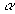

|
В. И. ЕЛИСЕЕВ ВВЕДЕНИЕ В МЕТОДЫ ТЕОРИИ
ФУНКЦИЙ ПРОСТРАНСТВЕННОГО КОМПЛЕКСНОГО ПЕРЕМЕННОГО |
10.4. Комплексные пространственные координаты
Восстановим к плоскости комплексного переменного
Модуль комплекса
Аргумент
Поверхность сферы в пространстве становится натянутой без точек пересечения на простейшую кривую в этом пространстве
1)
При этих условиях
Это условие определяет в пространстве числа с действительными параметрами. При стремлении
Пространственное комплексное число при всех действительных параметрах выразится в виде
,
при
имеем цилиндрическую третью осьВследствие наличия экспоненциального множителя, вторая часть пространственной кривой
Таким образом, простейшая кривая в пространстве имеет циклическое изменение параметров
. Это соответствует циклическому изменению аргументов, установленному при исследовании извлечения корня из+12) Подпространство делителей нуля выделяется двумя условиями
первое:
При этих условиях имеем
Так, что число записывается в виде
Один аргумент действительный, другой комплексный.
Второе условие
дает выражение для чисел –делителей нуля(5)
Делители нуля имеют модуль равный корню из нуля, который не равен в пространстве тождественно нулю, ввиду наличия изолированного направления аргумента
В комплексной плоскости и на действительной оси корень из нуля тождественно равен нулю. В пространстве необходимо рассматривать в этом случае и значение аргумента.Значение модуля делителей нуля представляет абстрактную величину
Внутренность изолированной оси принадлежит пространству другого измерения.
Модуль комплексного числа со вторым комплексным аргументом меньше модуля чисел с действительными аргументами
Поэтому и
В связи с этим окрестность нуля в пространстве меньше радиуса окрестности нуля в плоскости. Изолированное направление заключено в цилиндрической оси и указывает на наличие в пространстве измерений больших размерностей.
Для делителей нуля в форме (5) выполняются алгебраические правила комплексной плоскости, так что без нарушения этих правил и законов имеем
Умножая это выражение на любое комплексное число
 ( не равное делителю) получим общий вид для делителей нуля .
.
В цилиндрических комплексных координатах делители нуля образуют конус мнимых точек –чисел, которые не имеют суммарного модуля рис
6. В дальнейшем эти точки в физических исследованиях интерпретируются как носители поля взаимодействия.Мини оглавление:
[0], [1.1.1, 1.1.2, 1.1.3, 1.1.4, 1.1.5, 1.1.6, 1.1.7, 1.1.8, 1.2, 1.2.1, 1.2.2, 1.2.2.a, 1.2.2.b, 1.2.2.c, 1.2.2.d, 1.2.2.e, 1.2.2.f, 1.2.2.g, 1.2.2.h, 1.2.3, 1.3.1, 1.3.2, 1.3.3, 1.3.4, 1.3.5, 1.3.6, 1.4.1, 1.4.2, 1.5, 1.6, 1.7.1, 1.7.2, 1.7.3.1, 1.7.3.2, 1.7.3.3, 1.7.4.1, 1.7.4.2, 1.8.1], [2.1, 2.2],[3.1, 3.2, 3.3, 3.4.1, 3.4.2, 3.4.3, 3.4.4, 3.4.5],[4.1, 4.2, 4.3, 4.4],[5.1, 5.1.Рис.52, 5.2, 5.3, 5.4, 5.4.Т1, 5.4.Т2, 5.4.Т3, 5.5.1, 5.5.2, 5.5.3, 5.5.4],[6.1.1, 6.1.2, 6.2.1, 6.2.2, 6.2.3, 6.2.4, 6.2.5, 6.3, 6.4.1, 6.4.2, 6.5.1, 6.5.2],[7.1, 7.2, 7.3, 7.4, 7.5, 7.6, 7.7.1, 7.7.2, 7.8.1, 7.8.2, 7.8.3, 7.9],[8.1, 8.2.1, 8.2.2, 8.3, 8.4, 8.5, 8.6, 8.6.T1, 8.7, 8.8.1, 8.8.2, 8.8.3, 8.9.1, 8.9.2, 8.9.3, 8.10, 8.10.T2, 8.10.T3],[9.1, 9.2, 9.3, Рис.88, 89, 90, 91, 92, 93, 94, 95, 96, 97, 98, 99, 100],[10.1, 10.2, 10.3, 10.4, 10.5, 10.6, 10.7, 10.8, 10.9, 10.10, 10.11, 10.12, 10.13, 10.14, 10.15.1, 10.15.2, 10.16.1, 10.16.2, 10.17, 10.18],[11]
Размещенный материал является электронной версией книги: © В.И.Елисеев, "Введение в методы теории функций пространственного комплексного переменного", изданной Центром научно-технического творчества молодежи Алгоритм. - М.:, НИАТ. - 1990. Шифр Д7-90/83308. в каталоге Государственной публичной научно-технической библиотеки. Дата публикации в Сети на сервере Компании "Референт" 10 августа 1998. Отдельная благодарность Туристической компании Gallery of Destinations за оказываемую финансовую поддержку при издании книги.
E-mail: mathsru@gmail.com, Телефон: 7-495-314-5593 Владимир Иванович Елисеев